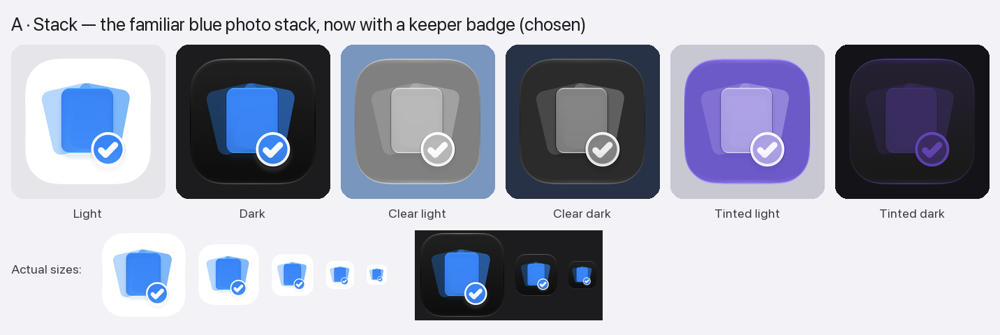
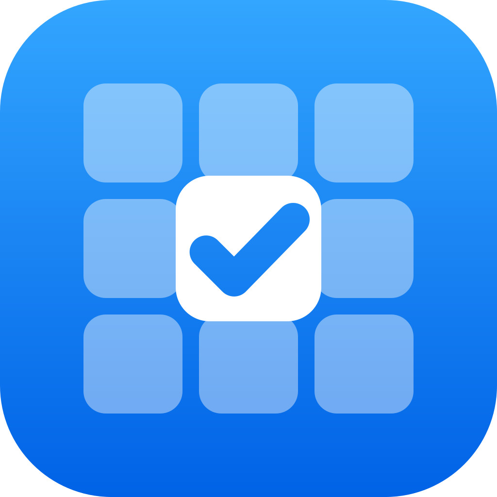
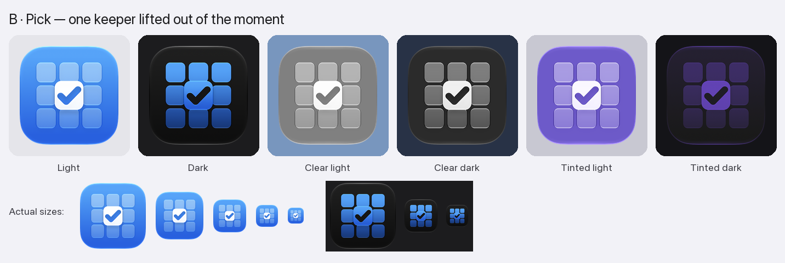
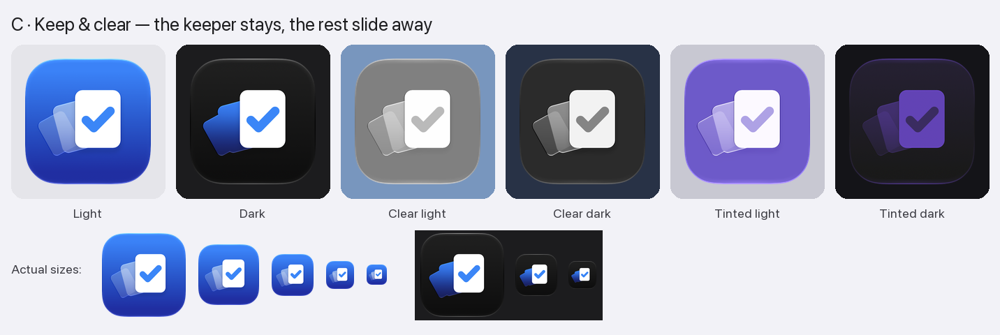

Pickr. 2.0 — app icon concepts
Three original drafts drawn from scratch for the 2.0 rebuild (the shipped icon is an exported SF Symbol and can't be open-sourced or kept). Each one is a layered Icon Composer document. The strips are Apple's own ictool renders in all six iOS appearances, plus actual home-screen sizes.
A · Stack brand continuity
Keeps today's look: a blue photo stack on white. The front card carries the blue selection badge you tap in the app, so the stack now says "this one's a keeper". Three layers: fanned back cards, the front card, and a glass badge on top.


B · Pick bolder
A moment shown as a contact sheet. One photo is lifted out of the grid and checked; the eight faded tiles are "the rest". It mirrors the Review grid, reads at every size, and turns into a clean monochrome glyph in clear and tinted modes.

C · Keep & clear bolder
Motion in a still image: the keeper card stands upright with a blue check while the rest slide off and fade. A deeper blue-to-indigo background makes it the most striking of the three on a home screen.
